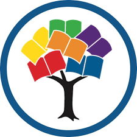
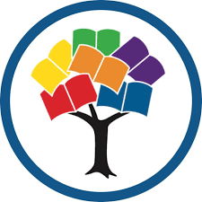

2nd Place - Built a web application that locates nearby vaccination clinics from a list of nearby 300,000 locations
US-wide, projects current and historical data about COVID cases, deaths, and vaccination percentages. More Info
Award: Best Environmental Hack - Built a web application with Machine Learning and AI to determine when the world will
reach dangerous levels of CO2 based on data from multiple research centers. More Info
Award: Best Education Hack - Competed against high school and college students worldwide. Built a web application that
made learning easier by connecting mentors and students with an easily navigable UI. More Info
Award: 2nd Place - Built a web application that generates lists of movie and tv-show recommendations for the user to
watch based on movie genre, movie release date, minimum rating out of 10, and language.More Info
Award: Best Website Application Built a web application that promoted escapism by implementing APIs that allows the user
to get new ideas, be entertained or learn new things.More Info
Award: Second Place Built a web application that took weather data from the user's location from the National Weather
Service API and recommended clothing from a dataset of clothing to the user.More Info
Award: Second Place, Award: Best Creative Use of Twilio, built a web application that analyses the symptoms reported by
the user and presents the most likely illness based on those symptoms using a custom-built, advanced AI.
More Info
Award: Third Place, Award: Best Website Application, built a completely AI-based application whose goal is to make sure
you are able to reach your fitness goals while also maintaining physical and mental equillibrium.
More Info


 
